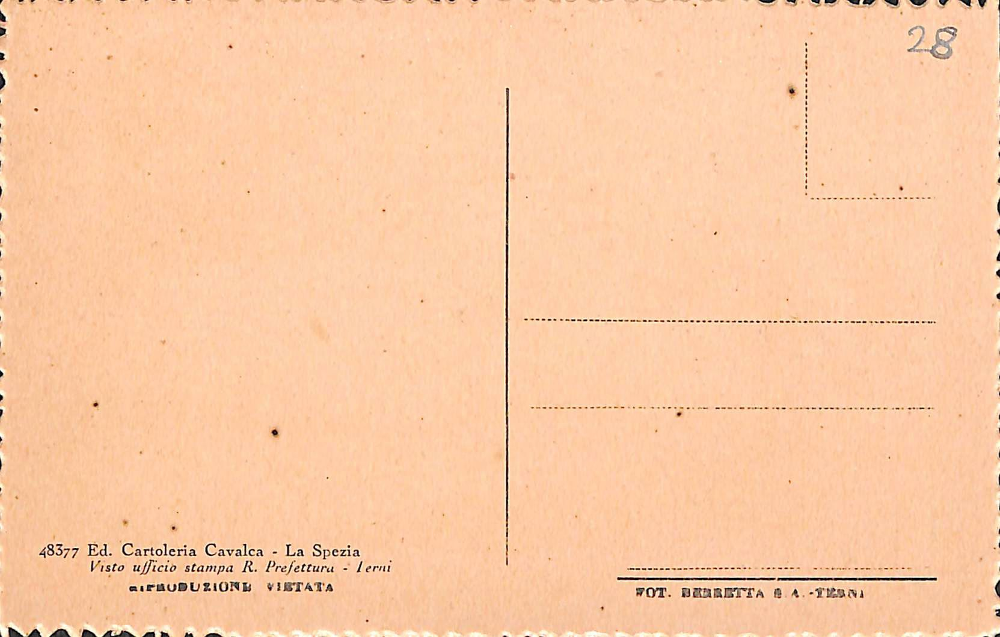
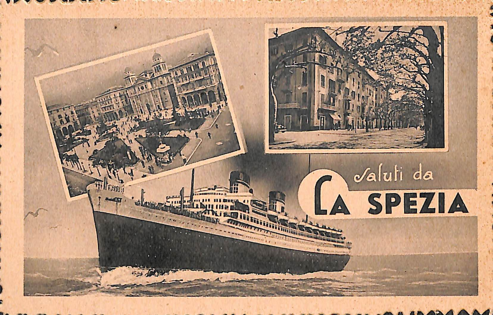
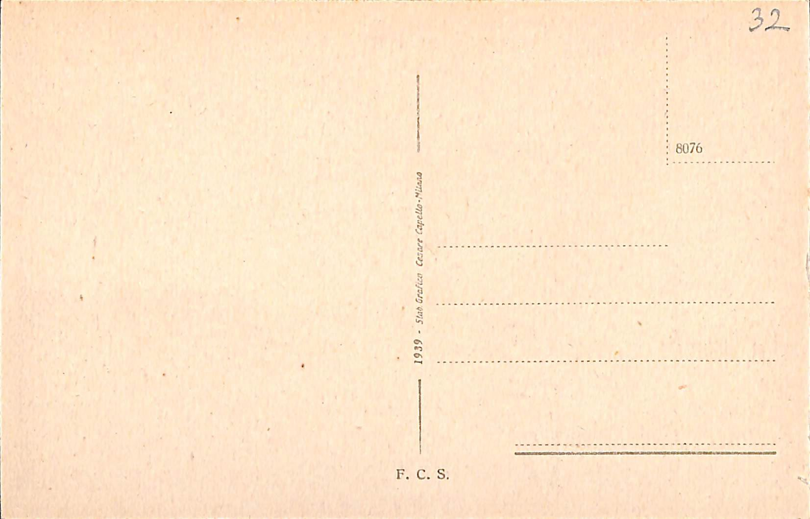
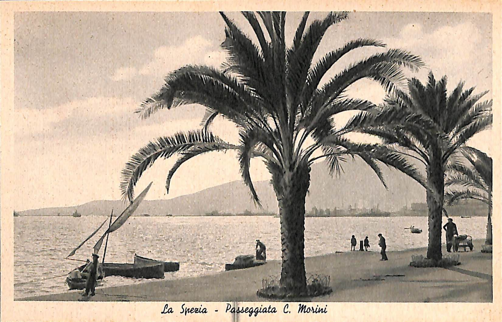

Provenienza cartoline:
Museo Civico Etnografico "Giovanni Podenzana", Sezione dei cimeli garibaldini e della Prima Guerrra Mondiale,
a: La Spezia (SP), Italia
Titolo dell'opera: [Saluti da La Spezia]
Rappresentazione: Scorci della città di La Spezia
Note: Cartolina Artistica, Sulla cartolina non è stato applicato nessun francobollo e nesusn timbro perchè non è mai stata spedita.
Materiale:CartaCondizioni:Cartoline in buone condizioni fisiche.Dimensioni:9x14


FRONTE:
Il fronte della cartolina in bianco e nero, è caratterizzato dalla riproduzione di una nave in mare, probabilmente vicino alla costa data la presenza dei gabbiani; sono poi presenti, altre due raffigurazioni, che propongono scorci della città di La Spezia, inseriti come fossero due fotografie appese; entrambe sono caratterizzate da una bordatura bianca, che fa da cornice.RETRO:
28Tipografia stampa:
48377 Ed. Cartoleria Cavalca - La Spezia Visto ufficio stampa R. Prefettura - Terni RIPRODUZIONE VIETATA OT. BERRETTA -TERNITitolo dell'opera: [Passeggiata Morini]
Rappresentazione: Scorcio della passeggiata Morini lungomare di La Spezia
Note: Cartolina Artistica, Sulla cartolina non è stato applicato nessun francobollo e nesusn timbro perchè non è mai stata spedita.
Materiale:CartaCondizioni:Cartoline in buone condizioni fisiche.Dimensioni:9x14


FRONTE:
Nella cartolina che stiamo visionando adesso, troviamo un'unica fotografia in bianco e nero, rappresentante la Passeggiata C. Morini. La fotografia seppur semplice, colpisce perchè raffigura, oltre uno scorcio rappresentativo della città, anche una scena di vita quotidiana, per cui possiamo ad esempio trovare, barche ormeggiate vicino alla riva, uomini intenti a passeggiare, ma anche uomini che sembrano invece intenti a lavorare.RETRO:
32Tipografia stampa:
1939 - Stab. Grafica Cesare Capello- Milano F.C.S.